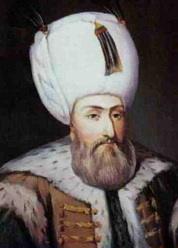

|
 |
KANUNİ SULTAN SÜLEYMAN I. Süleyman 1520 yılında, babası I. Selim'in vefatının ardından tahta çıktı. Batıda Belgrad, Rodos, Boğdan ve Macaristan'ın büyük kısmını imparatorluk topraklarına kattı. 1529 yılında Viyana'yı kuşatsa da çeşitli sebeplerden ötürü bu kuşatma başarısızlıkla sonuçlandı. Doğuda, Safevîlerle yapılan savaşlar sonrasında Orta Doğu'nun büyük kısmını ele geçirdi. Afrika'da imparatorluğun sınırları Cezayir'e kadar uzanırken; Osmanlı Donanması ise Akdeniz'den Kızıldeniz'e kadar olan sularda hakimiyet kurmuştu.[4] I. Selim'den 6.557.000 km2 olarak devraldığı Osmanlı İmparatorluğu'nu,[5] padişahlığı döneminde 14.893.000 km2'ye ulaştırdı.[6][7] Zigetvar Muharebesi'nin sonlanmasından yaklaşık bir gün önce, 6 Eylül 1566 tarihinde hayatını kaybetti ve yerine oğlu II. Selim geçti. |